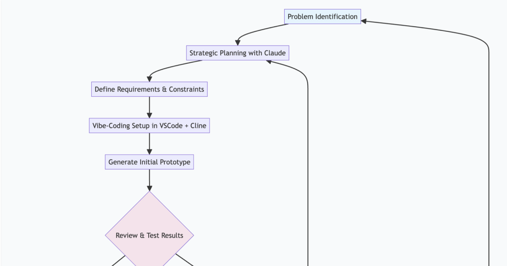

The Strategic Designer's Guide to AI: From Problem-Solving to Solution-Building
July 1, 2025
The conversation around AI and design often focuses on the wrong question. Instead of asking "Will AI replace designers?" we should be asking "How can strategic designers leverage AI to solve problems more completely?"
As someone who has witnessed the evolution of design through multiple technological paradigm shifts—from the early web to mobile-first design to content management systems—I've learned that the most successful designers aren't those who resist change, but those who recognize that their core value lies not in the tools they use, but in their ability to think strategically about problems.
The Unchanging Foundation: Strategic Creative Thinking
A mentor once told me,
"You need to be able to design when the power goes out."This principle has shaped my entire approach to design and explains why I've always viewed UX, UI, and Product design as different aspects of solving the same fundamental problem rather than separate disciplines requiring different specialists.
This doesn't negate the reality that complex projects often require specialized expertise and hyperfocus on particular aspects of the design process. Sometimes you absolutely need deep specialists. But I believe all designers should understand what those different roles contribute and be able to demonstrate competency across the spectrum. This foundational understanding makes you a better collaborator when working with specialists and a more effective problem-solver when working independently.
When you ground your practice in strategic thinking—understanding users, identifying real problems, and conceptualizing solutions—every new tool becomes an opportunity to execute those ideas more effectively. Whether it was learning HTML in a plain text editor, mastering CSS frameworks, or building iPhone apps, each technological shift demanded technical adaptation while the core problem-solving skills remained constant.
The AI revolution follows this same pattern, but with one crucial difference: it dramatically accelerates the path from strategic thinking to functional solution.
The New AI-Accelerated Design Process
Here's how I've restructured my design workflow to leverage AI while maintaining strategic focus:
- Strategic Ideation with AI Partners Instead of brainstorming in isolation, I use AI as a thinking partner for initial concept development. The key is bringing well-defined problems to the conversation, not vague requests for inspiration.
- Rapid Prototyping Through Natural Language Using tools like VSCode with Cline, I can describe the type of prototype I want to create using "vibe-coding"—natural language descriptions that get translated into functional code. This eliminates the traditional gap between design concept and testable prototype.
- Iterative Improvement Cycles The real power comes in the feedback loop. After reviewing each AI-generated result, I provide specific improvement areas, test the results, and continue refining. This isn't passive consumption of AI output—it's active collaboration that requires deep design judgment.
- From Prototype to Documentation Once a prototype communicates clearly and meets specifications, I can have AI review the working solution and generate comprehensive product requirements documents, complete with executive summaries for non-technical stakeholders.
This process transforms the traditional design-development handoff into a seamless flow from strategic thinking to functional prototype to production-ready documentation.
What This Means for Design Organizations
The implications extend far beyond individual workflow improvements. Companies that embrace AI-accelerated design processes will fundamentally reshape how they think about design roles and team structures.
This shift is already happening. During a recent conversation with a startup founder in AppSec, I mentioned that
"I can't imagine trying to land a job where you strictly make buttons and small UI components look amazing."His response was immediate:
"Yeah, that train has left the station already and AI is catching up fast."
This exchange crystallizes the challenge facing many designers today. The purely executional aspects of design—the pixel-pushing, the component refinement, the visual polish—are increasingly within AI's capabilities. But the strategic thinking, problem definition, and solution validation remain distinctly human skills.
AI-Accelerated UX Design Workflow
As an example and illustration, I created this diagram using Claude and simply prompting it to create a workflow diagram for this whole process.
AI still can't look at a variety of designs and say "that one is designed better" or "that one feels right" the way a human designer familiar with a design system can. That intuitive understanding of quality, brand consistency, and user experience requires human judgment and contextual knowledge that AI cannot replicate today (in the future maybe? Who knows.).
While AI can help analyze data from testing to inform decisions, the strategy component of design thinking still rests firmly in the hands of creative minds.
The Continuous Improvement Mindset
The most crucial skill for strategic designers in an AI-accelerated world is the ability to provide constructive feedback and implement improvements constantly. This requires:
- Clear Problem Definition: AI tools work best when given specific, well-defined challenges
- Rapid Evaluation Skills: The ability to quickly assess whether a solution addresses the real problem
- Iterative Thinking: Comfort with refining solutions through multiple improvement cycles
- Quality Standards: Maintaining high standards for usability and user experience regardless of how solutions are generated
Looking Forward: The Strategic Designer's Opportunity
We're witnessing a fundamental shift in what it means to be a designer. The traditional boundaries between UX, UI, and Product design are dissolving, replaced by a more holistic approach to problem-solving that leverages AI for execution while maintaining human insight for strategy.
The designers who recognize this shift early—who embrace AI as a collaborator rather than competitor—will find themselves in an incredibly powerful position. They can deliver complete solutions faster than traditional teams, validate ideas with functional prototypes, and communicate findings in whatever format stakeholders need.
But this opportunity comes with a requirement: you must be willing to continuously learn, adapt, and improve. The tools will keep evolving, but the fundamental skills of strategic thinking, problem identification, and solution validation will become more valuable than ever.
The future belongs to designers who can think strategically about problems and execute solutions comprehensively. AI just makes that future arrive faster.
The key insight is simple: if you can design when the power goes out, you can design when the power comes back on with AI assistance. The strategic thinking remains yours; the execution just gets a lot more interesting.
About the Author
Matthew White is a strategic designer exploring the intersection of human creativity and artificial intelligence. His work focuses on demonstrating how design thinking can be amplified—not replaced—by emerging technologies.
You can explore more of his AI-augmented design experiments at tchr01.github.io/ux.
Background Image Note: The background image is inspired by the schematic from Apollo 13, a testament to design thinking in its most critical form. When NASA engineers had to improvise solutions to save three astronauts from certain peril, they embodied the essence of strategic problem-solving—using limited resources, collaborative thinking, and creative adaptation to overcome seemingly impossible challenges... 52 years before the public launch of ChatGPT. Imagine if they had the power of AI to accelerate their mission return flight plan?